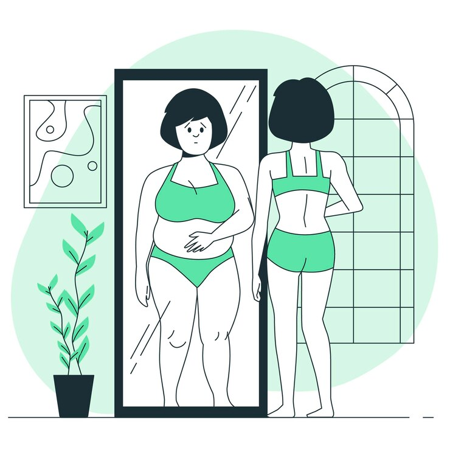
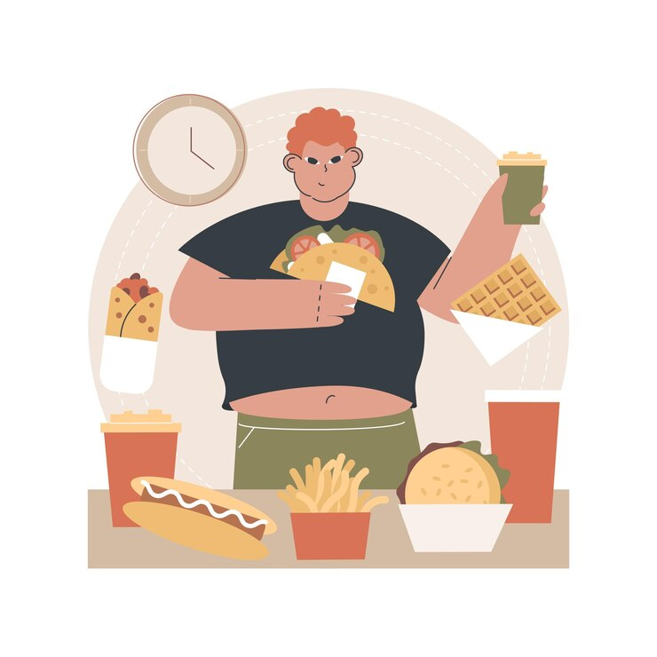
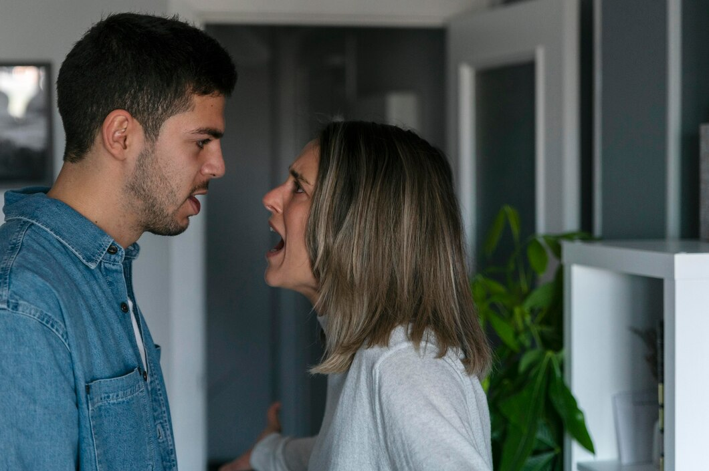
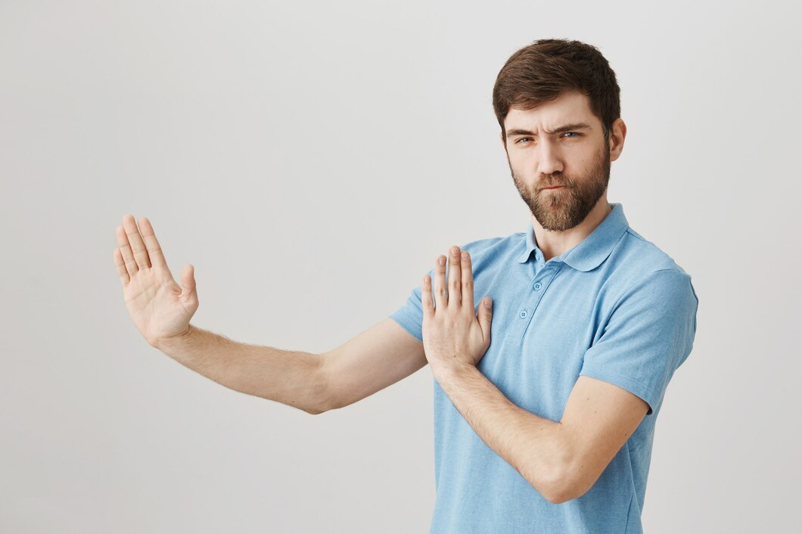

INGLÉS
GUIA DE TRABAJO – TALLER INTEGRADO
I.E.D.E.M. ASIGNATURA: INGLES DOCENTE: RAUL CAÑAS
INSTRUCCIONES GENERALES
1. DESCARGUE EL DOCUMENTO Y CONSERVELO EN FORMATO DE WORD PARA SOLUCIONARLO.
2. LEA ATENTAMENTE LAS INSTRUCCIONES DE CADA UNA DE LAS ACTIVIDADES PARA RESOLVER APROPIADAMENTE.
3. RESUELVA EL TALLER EN ESTE MISMO DOCUMENTO AGREGANDO LAS PAGINAS QUE SEAN NECESARIAS PARA SU SOLUCION.
4. AL TERMINAR DE RESOLVER, PUBLICARLO EN SU PAGINA WEB PARA SU RESPECTIVA EVALUACION.
5. FECHA FINAL DE ENTREGA: AGOSTO 4
ACTIVITY 1: LEE Y TRADUCE CADA UNO DE LOS PARRAFOS QUE SE DAN EN LA LECTURA A CONTINUACION.
Eating Disorders (trastornos alimenentarios)
Eating disorders are so common in America that 1 or 2 out every 100 students will struggle with one. The most common types of eating disorder are anorexia nervosa and bulimia nervosa (usually called simply “anorexia” and “bulimia”: But other food-related disorders, like binge eating disorders, body image disorders, and food phobias, are showing up more frequently than they used to.
ANOREXIA
People with anorexia have an extreme fear of weight gain and a distorted view of their body size and shape. As a result, they can’t maintain a normal body weight.
Some people with anorexia restrict their food intake by dieting, or excessive exercise. They hardly eat at all – and the small amount of food they do eat becomes an obsession. Other people with eating disorders do something called binge eating and purging, where they eat a lot of food and then try to get rid of the calories by forcing themselves to vomit, using laxatives, or exercise excessively
BULIMIA
Bulimia is similar to anorexia. With bulimia, a person binge eats (eats far too much food) and then tries to compensate it extreme ways, such as forced vomiting or excessive exercise, to prevent weight gain. Over time, these steps can be dangerous. To be diagnosed with bulimia, a person must be binging and purging regularly, at least twice a week for a couple of months. People with bulimia eat a large amount of food (often junk food) at once, usually in secret. The person typically feels powerless to stop eating and can only stop once he or she is too full to eat any more.
Kidshealth.org (abridged)
ACTIVITY 2: BUSCA UNA IMAGEN QUE PUEDA IDENTIFICAR CADA UNO DE LOS PARRAFOS DE LA LECTURA ANTERIOR Y AGREGALO EN LA SOLUCIÒN DEL TRABAJO PROPUESTO
ACTIVITY 3: RESUELVE EL CUESTIONARIO QUE SE DA A CONTINUACIÓN A PARTIR DE LA LECTURA.
A- Read the text and decide whether these sentences are true (T) or false (F). Correct the false ones.
B- A great number of American students will suffer from eating disorders. ____
C- Anorexia and bulimia are the only food-related disorders. _____
D- Anorexics like their body. ______
E- Some anorexics eat very little and do too much exercise. ______
F- Some bulimics try to lose their calories by exercising regularly. ______
Answer the following questions with complete sentences.
H- What are the symptoms of bulimia?
I- When can we say that a person suffers from bulimia?
J- Why do bulimics eat so much?
ACTIVITY 4: COMPLETA EL SIGUIENTE CUADRO CON LA INFORMACIÒN QUE SE PIDE: ESCRIBE EN CADA CASO TRES SUGERENCIAS APLICANDO LAS EXPRESIONES: SHOULD – SHOULDN’T / HOW ABOUT…? / WHY DON`T YOU…? PARA EXPRESAR LA POSIBLE SOLUCIÒN A CADA UNA DE ESTAS SITUACIONES DE SALUD.
UTILIZA VOCABULARIO Y EXPRESIONES ESTUDIADAS Y TRABAJADAS EN CLASE
ACTIVITY 5: ELABORA UNA LISTA DE 12 HABITOS SALUDABLES Y NO SALUDABLES CON SU RESPECTIVA IMAGEN. LUEGO ESCRIBE PARA CADA UNO UNA SUGERENCIA APLICANDO LAS EXPRESIONES: SHOULD – SHOULDN’T / HOW ABOUT…? / WHY DON`T YOU. SIGUE EL EJEMPLO:
DRINK WATER SUGERENCIA:
- WE SHOULD DRINK WATER BECAUSE IT IS NECESSARY AND IMPORTANT FOR OUR HEALTH.
- HOW ABOUT DRINKING WATER FOR HAVING A BERTTER HEALTH?
- WHY DON’T YOU DRINK WATER TO HAVE GOOD HEALTH?
NOTA: LA LISTA DE ESTOS HABITOS DEBE SER DIFERENTE AL VOCABULARIO TRABAJADO EN CLASE
SOLUTION
ACTIVIDAD UNO
TRASTORNOS ALIMENTARIOS
Los trastornos alimentarios son tan comunes en Estados Unidos que 1 o 2 de cada 100 estudiantes lucharán con uno. Los tipos más comunes de trastornos alimentarios son la anorexia nerviosa y la bulimia nerviosa (generalmente llamadas simplemente “anorexia” y “bulimia”). Sin embargo, otros trastornos relacionados con la comida, como el trastorno por atracón, los trastornos de la imagen corporal y las fobias alimentarias, están apareciendo con más frecuencia de lo que solían.
ANOREXIA
Las personas con anorexia tienen un miedo extremo a aumentar de peso y una visión distorsionada de su tamaño y forma corporal. Como resultado, no pueden mantener un peso corporal normal. Algunas personas con anorexia restringen su ingesta de alimentos mediante dietas o ejercicio excesivo. Apenas comen nada, y la pequeña cantidad de comida que ingieren se convierte en una obsesión. Otras personas con trastornos alimentarios realizan lo que se llama atracones y purgas, donde comen una gran cantidad de comida y luego intentan deshacerse de las calorías forzándose a vomitar, usando laxantes o haciendo ejercicio excesivo.

BULIMIA
La bulimia es similar a la anorexia. Con la bulimia, una persona come en exceso (consume una cantidad de comida excesiva) y luego intenta compensar de manera extrema, como forzándose a vomitar o haciendo ejercicio excesivo, para evitar el aumento de peso. Con el tiempo, estos comportamientos pueden ser peligrosos. Para ser diagnosticado con bulimia, una persona debe estar realizando atracones y purgas regularmente, al menos dos veces por semana durante un par de meses. Las personas con bulimia comen una gran cantidad de comida (a menudo comida chatarra) de una vez, generalmente en secreto. La persona típicamente se siente impotente para dejar de comer y solo puede detenerse una vez que está demasiado llena para comer más
Kidshealth.org (abridged)

ACTIVIDAD TRES
• Read the text and decide whether these sentences are true (T) or false (F). Correct the false ones.
• A great number of American students will suffer from eating disorders. TRUE
• Anorexia and bulimia are the only food-related disorders. FALSE
• Anorexics like their body. FALSE
• Some anorexics eat very little and do too much exercise. TRUE
• Some bulimics try to lose their calories by exercising regularly. TRUE
• Answer the following questions with complete sentences.
1- What are the symptoms of bulimia?
• They eat too much and after that they try to compose that throwing up or making so much exercise for don’t win weight and purging constantly.
2- When can we say that a person suffers from bulimia?
• They eat so much, like junk food and then they throw up and they purge or make too much exercise.
3- Why do bulimics eat so much?
• They eat so much because of binge eating.
ACTIVIDAD CUATRO
EATING DISORDERS
• Why don’t you go to a doctor that could help you?
• You shouldn’t stop eating or eat so much, just try slowly to normalise what you eat.
• That could be psychological, why don’t you go with a psychologic?
ANOREXIA
• You shouldn’t be afraid of win weight, it’s something normal.
• Why don’t you talk with someone that could help you?
• Why don’t you go to a nutrition program that could help you?
BULIMIA
• Why don’t you treat find an activity that excites you and keep your mind busy?
• How about verificate your social circle, they could be one of the reasons you’re doing it.
• You should find your family refuge they always will be the better company and solution for your problems.
ACTIVIDAD CINCO
TRAVEL
• You should travel because that opens your mind and you can meet better the places where you live.

RUN
• How about run more? That could help to have a better health.
WATCH SUNSETS
• Why don’t you see sunsets? That’s relaxing and can help you to have some peace.
GO TO BEACH
• How about go to beach for have a funny moment? You can go with your family or friends.
QUALITY TIME
• You should pass more moments with people like your family and children for have a better quality time and moments in family.

READ
• Read is good because that can help us to have a better vocabulary, orthography and calligraphy with that we also can connect with the characters in the books. Why don’t you read more?
SHARE TIME WITH YOUR FAMILY
• How about share time with your family for more moments together?

HAVE PETS
• Have pets could be a really good thing, they can help us for so many things and can be a good company, how about have a cat or a dog for don’t feel alone?

FIGHT
• How parents you shouldn’t fight in front of your children because that can create traumas in a future.

BE LATE
• You shouldn’t go late because that could be stressful for the other people.
DON’T GREET
• You should always greet the others because don’t do it can make the others feel bad.

DON’T TAKE CARE OF YOURSELF BEING SICK
• You should always take your medicine because if you don’t take it your health can go badly.